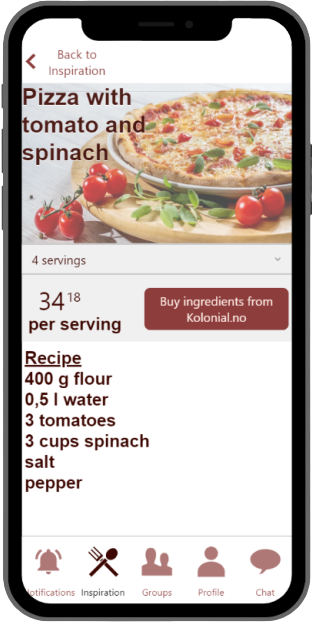
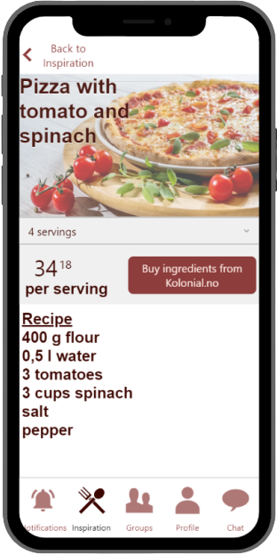

Get Started
Follow these steps to install COmeals and get the app running on your mobile device in minutes.

Download COmeals from App Store or Google Play to start your journey!
Sign up through registrering your phonenumber or by using BankID.
This is to verify your account and to make sure that your integrity is preserved.
Update your profile in the profilesection. You can change your password,
preffered language or read the terms and conditions.

Click on the "Create a new group" label to make a new group. This allows you to make a public or private group, where you can add preferences for food, how many days a week you wish to eat lunch with the group, how much money you wish to spend on lunch, and the time and place for meeting up with the group. If you make the group private, you will receive a code that can be sent to friends who want to join the group. You can also set it to be public if you want to include new people to the group.
Click on the "Find an existing group" label to join an already existing group. Here you can put in a code to access a private group, or you can search for a public group. When searching for a public group, you can filter the results after time and place for meetups and what days you want to have lunch with the group, and then all the available groups will appear. When accessing one of the available groups, an overview of groupmembers, how much they are willing to spend on lunch, and if they have any allergies or preferences will be shown, and you can send a request to join.
When you have joined a group, click one of the labels underneath "Your existing groups". Here you will se the groupmembers, expenses, what day you will bring lunch, and where and when the group is meeting. After you have bought and made lunch, you can scan your receipt and the expense will be fordelt on all the groupmembers.

If you have any questions for the CoMeals team or your groupmembers, you can easily communicate through the chat-function.
The notifications are also helpful to keep up to date with everything that is happening on COmeals.
See our conditions for more information about COmeals.
Search for specific recipes or filter values to find your new favorite foods.
Our recipes are brought to you in samarbeid with Kolonial, who will also give you an overview of the expenses to the different meals.
Good luck!
 

References Step 4, pictures on prototype:
Asian World (01.08.2019), SIGMA LAUNCHES THE INNOVATIVE SNACKS CHALLENGE [Photograph] From URL http://asianworldnews.co.uk/food/sigma-launches-the-innovative-snacks-challenge/
Pixabay (13.12.2017), Unknown title [Photograph] From URL https://pixabay.com/no/photos/piza-mat-ost-tallerken-lunsj-3010062/"